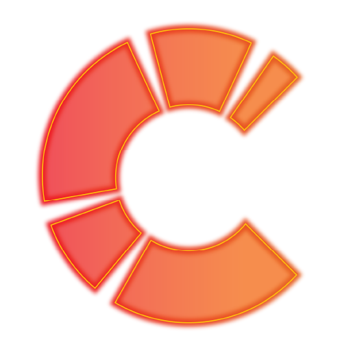
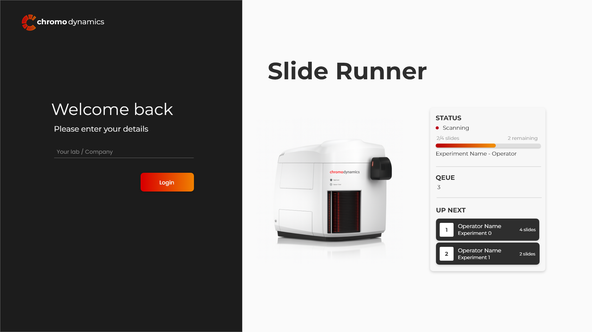
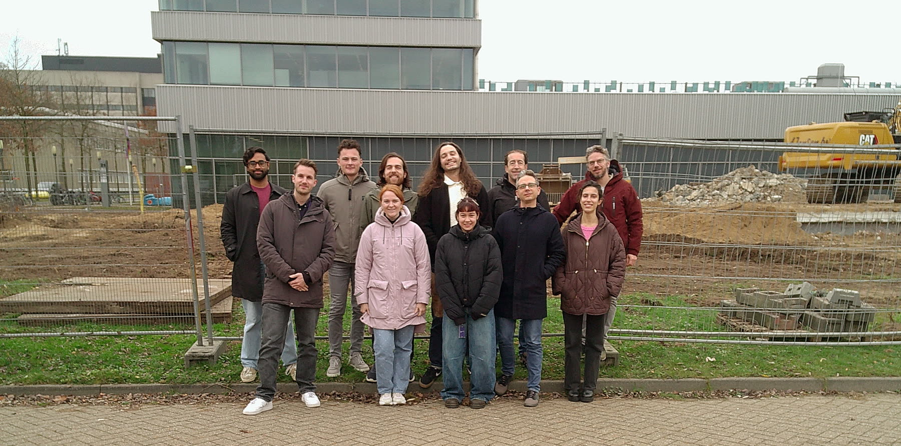
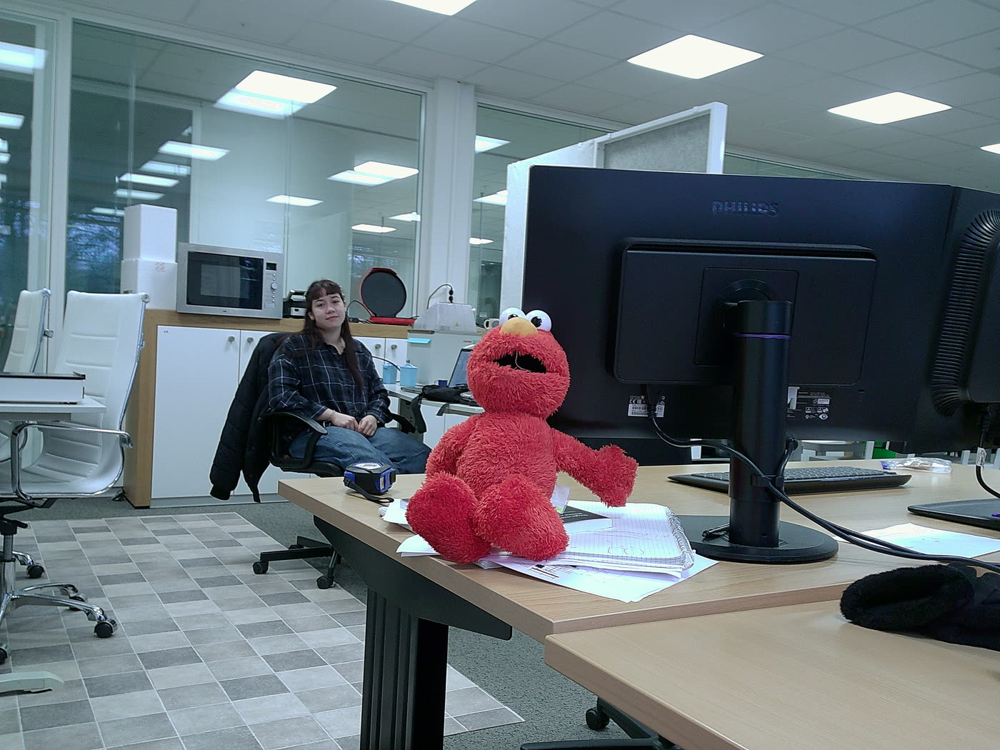

01 — The project
Rebranding a microscopy company
During my 18-week internship I researched and redesigned the brand of Chromodynamics, a microscopy company in Eindhoven, creating the logo, brand guide, website prototype and app UI redesigns.
LogoA new mark and logotype for the company
Brand guideThe rules for using the new identity consistently
Website prototypeA redesigned website in the new brand
App UI redesignsThe Slide Runner app, redesigned in the new brand
02 — The new identity
A mark built from segments

03 — Website prototype
Making visible what matters most

04 — App UI redesign
Slide Runner, in the new brand

05 — The team
18 weeks at Chromodynamics
The colleagues I worked with during my internship in Eindhoven.

